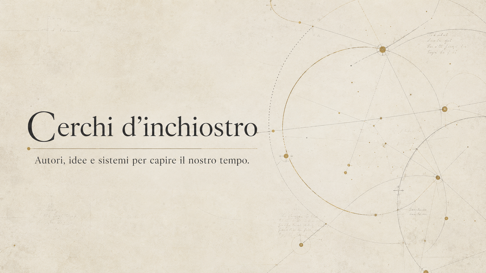
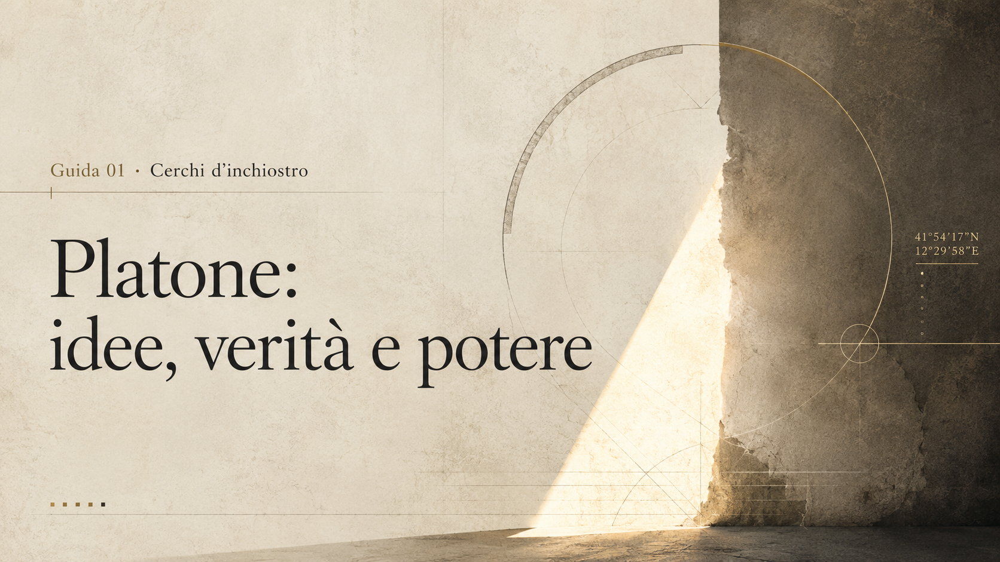

Autori, idee e sistemi per capire il nostro tempo.
Un progetto editoriale per attraversare autori e opere come nodi attivi: non schede isolate, ma mappe di lettura su verità, potere, educazione e forme del presente.
Cerchi d’inchiostro è una serie editoriale di Alessandro Gentili dedicata ai grandi autori del pensiero, della letteratura e della politica. Ogni guida collega vita, opere, concetti e presente: non semplici biografie, ma mappe per leggere il nostro tempo.
Ogni guida nasce come pagina-sistema: un autore viene letto dentro una costellazione di problemi, concetti, crisi storiche e domande contemporanee. Gli autori diventano nodi di una rete, non monumenti separati.


Guida 01
Platone
Idee, verità e potere.
Vita, opere e concetti chiave per leggere Platone come snodo tra metafisica, politica, educazione e governo della visibilità.
La guida sistemica ad Aristotele: sostanza, forma e materia, potenza e atto, quattro cause, etica, politica, Poetica e perdita della forma nel presente.
La guida sistemica a Max Weber: razionalizzazione, disincanto, burocrazia, dominazione legittima, Stato, capitalismo, Beruf, scienza, politica e apparato moderno.